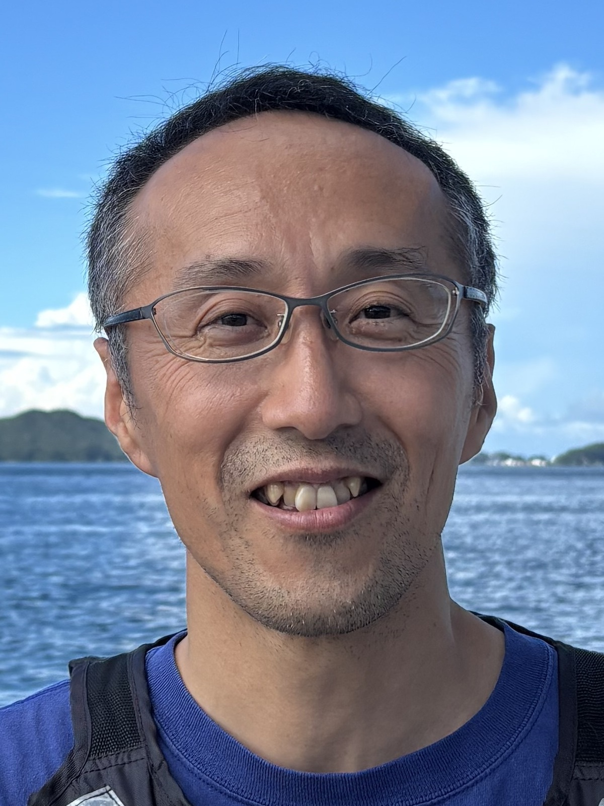
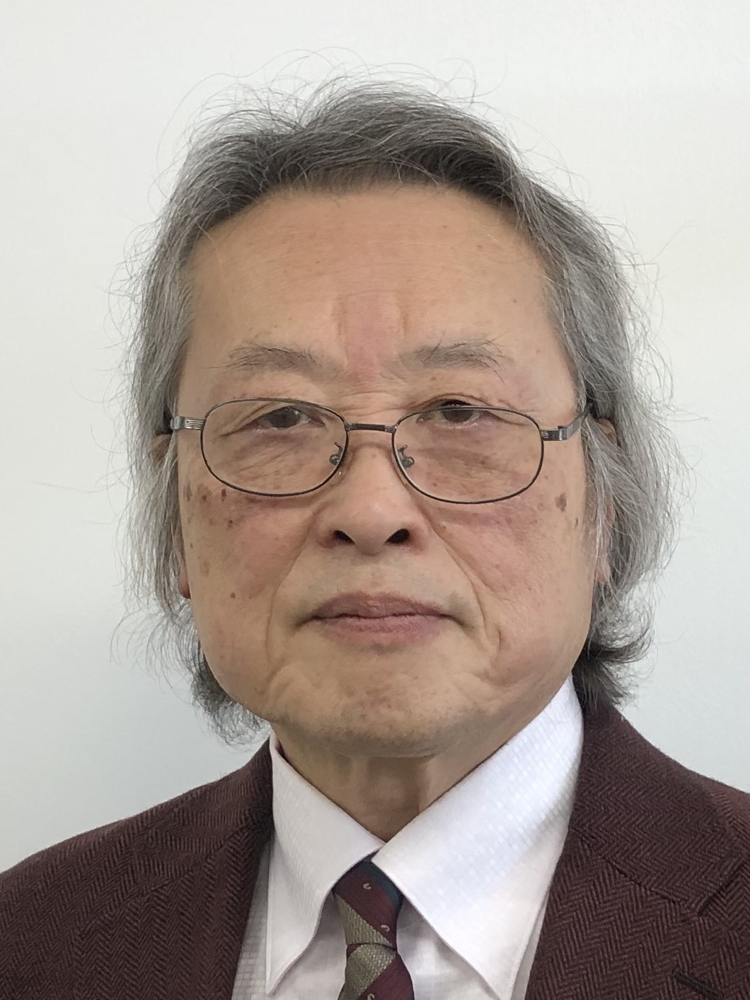

日本進化学会第28回大会
プレナリー講演
プレナリー１: 海洋生物から探る単細胞性・多細胞性の進化
五島 剛太 博士（名古屋大学菅島臨海実験所）

本講演では、単細胞性と多細胞性の進化について、海で採集した生物を対象とした遺伝学・細胞生物学的研究で得られた知見を基に議論したいと思います。
私は学部卒業研究以来25年間、モデル生物や培養細胞を用いて微小管関連の細胞生物学・生化学研究に従事してきました。ところが6年前、思いがけず離島の臨海実験所に研究拠点を移すことになり、近海で海藻や海生真菌の採集を始めました。そこで出会った生物は私にとって新鮮で、驚きの連続でした。海藻では、単細胞でありながら10 cm以上に成長し、特徴的な形態を形成する緑藻・ハネモに魅了されました。単細胞のまま大型化・複雑化する仕組みに興味を持ち、これまでにゲノム解読やRNAi法の開発などを進め、モデル生物化に取り組んできました。真菌では、栄養状態に応じて単細胞増殖と多細胞体成長を切り替える「可塑的多細胞生物」種を単離しました。遺伝子組換え法を開発し、成長様式の切り替えに必要な遺伝子群を同定しました。さらに近縁種として、恒常的多細胞性種、恒常的単細胞性種、および可塑的ではあるものの切り替え機構の異なる種も単離しました。これらは、多細胞生物の進化を考える上で興味深い研究材料になると考えています。
プレナリー２: ヘッケルの構想と現代の進化発生学の課題
倉谷 滋 博士（東京科学大学・理化学研究所）

進化発生学（Evo-Devo）の成立は、これまで発生学を進化学へ導入した出来事として評価されることが多かった。しかし私は、この理解は十分ではないと考えている。第一に、発生を通して進化を理解しようとする試みは、ダーウィン以前からすでに存在し、それは不完全ながらも19世紀後半にいたってヘッケルの反復説、すなわち「生物発生原則：Biogenetisches Grundgesetz」へと結実していた。それを応用した典型的学説として「ガストレア説」を位置づけることができる。そこでは、個体発生を階層的な個体性の形成過程として理解する形態学的枠組みが提示され、現代の進化発生学もその歴史的延長上にある。一方でヘッケルは、クダクラゲを用いた比較発生学実験をもおこない、発生の経路の変更として形態進化を解釈する方法の萌芽を示しつつあった。しかし、1870年代、ヘッケル発生学に批判的なヴィルヘルム・ヒスの登場を切掛けに、発生学は共時態の学としての発生機構学（実験発生学）と通時態の学としての比較発生学へと分裂していった。20世紀末における進化発生学の興隆は、この2つの立場の再融合を目指す試みとして理解することができる。本講演ではまず、ヘッケルのカエノゲネジス（変形発生）、ゼヴェルツォッフの二次アルシャラクシス論、Neafの末端変形理論を現代的視点から再解釈し、発生経路そのものが進化の過程でどのように改変されるのかを考察することによって、反復説の次に来るべきステップを考える。第二に、現代の進化発生学は発生の重要性を明らかにしたものの、なお集団遺伝学や進化生物学と十分な理論言語を共有しているとは言い難い。現在の進化理論では、ゲノム型から表現型への対応は写像として扱われ、発生プロセスは相変わらずブラックボックスとなることが多い。しかし、形態進化の実体は、その中間に存在する発生過程の変化にある。Waddingtonのエピジェネティック・ランドスケープは、この発生過程を可視化した試みであったが、本来それは細胞分化を記述するモデルであり、形態形成そのものを扱うには限界がある。そこで、このランドスケープを拡張し、ゲノム空間（G層）、細胞活動空間（C層）、形態形成空間（M層）から成る三層構造として系を捉える枠組みを提案する。形態形成は細胞活動から葉裂する独立した統合レベルとして成立し、その上には発生拘束によって形成された単一路の発生経路（クレオド）が存在する。ファイロタイプや発生拘束は、このM層に形成された保存的構造として理解される。このC層からC層とM層が重層化した状態（C層+M層）への葉裂は、ヘッケルが想定した個体性の序次の階層的構造を現代的に読み替えたものである。さらに、発生的応答規準（Developmental Reaction Norm: DRN）の概念を導入し、自然選択は完成した表現型のみならず、その表現型を実現する発生経路を同時に選択するという立場を提示する。表現型への選択圧は、安定化選択や遺伝的同化を通じて発生プログラムへ内部化され、最終的にはゲノム構造の変化へと結びつく。この視点は、発生経路の変化を進化過程の中心に位置づけることで、発生学と進化学を統合する理論的基盤を与えるものと考えられる。進化発生学はこれまで形態進化の理解に大きく貢献してきた。しかし今後は、発生系を進化理論の中に明示的に位置づけ、発生過程・自然選択・ゲノム進化を統一的に理解する新たな理論体系の構築へ進む必要がある。本講演では、そのための概念的枠組みと、進化学の今後の展望について考える。
シンポジウム
S1: 光グローカル：進化が創り出した光利用の実像の理解
企画者：小柳 光正（大阪公立大学大学院理学研究科）
S2: トランスポゾンによる遺伝情報拡散とパンゲノム進化
企画者：大島 一彦（長浜バイオ大学）
S3: 多様性の至近・究極要因を繋ぐ「ゆらぎ」
企画者：石郷岡 潤（マックス・プランク協会フリードリッヒ・ミーシャー研究所）
S4: 新規環境への進出にともなう生物の適応戦略を探る
企画者：平松 楓佳（東京大・新領域創成科学研究科、進化学若手の会）、柄澤 匠（北海道大・環境科学院、進化学若手の会）
S5: 複雑な甲殻類ゲノムの新展開：進化・生態・水産をつなぐ
企画者：佐藤 大気（千葉大学 国際高等研究基幹 全方位イノベーション創発センター）、牧野 能士（東北大学）
S6: How microevolutionary mechanisms produce macroevolutionary patterns
企画者：Daohan Jiang（Okinawa Institute of Science and Technology Graduate University）
S7: 植物を舞台に進化をみる
企画者：福島 健児（国立遺伝学研究所）、別所-上原 奏子（東北大学）
S8:「性」と「種」はどう進化するのか？ ―性決定・交雑・種分化をつなぐ進化ダイナミクス―
企画者：林 舜（広島大学 両生類研究センター 進化発生ゲノミクス研究グループ）、伊藤 道彦（北里大学理学部）
S9: 脊椎動物の形態進化を支える発生プログラム
企画者：隅山 健太（名古屋大学大学院生命農学研究科）、日下部 りえ（関西大学化学生命工学部）
S10: 生態学×ゲノミクスで明らかにする適応進化の仕組み
企画者：岸野 紘大（名古屋大学）、須田 崚（東京大学）
S11: ここまで出来る！ 環境DNA×進化学研究
企画者：荒木 仁志（北海道大学大学院農学研究院 基盤研究部門 生物資源科学分野 動物生態学研究室）
S12: ホモ・サピエンスの認知能力の進化
企画者：河田 雅圭（東北大学 教養教育院）、太田 博樹（東京大学・院理学・生物）
S13: 進化アセンブリ学 x 進化可能性変動史
企画者：鈴木 誉保（順天堂大学）、平沢 達矢（東京大学）
夏の学校
「非モデル生物の進化研究のためのゲノム解析入門
〜ゲノムプロジェクトの設計からアセンブリ・アノテーションまで〜」
- 日時：2026年8月22日（土） 9:30- 12:00（9:00開場・受付開始）
- 場所：愛知県名古屋市 名古屋大学 東山キャンパス 全学教育棟 S30講義室（アクセス）
- 講師：重信 秀治（基礎生物学研究所／筑波大学／総合研究大学院大学）
- 形式：レクチャー（デモを含む）
（概要）
近年、次世代シーケンス技術の進展により、非モデル生物であっても比較的容易にゲノム配列を解読できるようになり、ゲノム情報に基づく進化研究は急速に広がっています。その一方で、シーケンス技術やバイオインフォマティクス手法の進歩は速く、研究目的や対象生物に応じてどのような手法を選択すべきか、判断に迷う場面も少なくありません。また、非モデル生物ならでは難しさも存在します。
今回の「夏の学校」では、新規にゲノムを決定する場面を想定したゲノム解析の入門講座を開催します。まず、ゲノムプロジェクトの戦略立案からデータ解析までの全体像を概観します。次に、次世代DNAシーケンサーから得られる生データを出発点として、ゲノム配列の構築（アセンブリ）、遺伝子および機能の注釈付け（アノテーション）に至る一連のプロセスを重点的に解説します。具体的な解析ツールの使用例についても、デモを交えながら紹介します。対象は原核生物と真核生物の双方とします。時間が許せば、得られたゲノム情報を進化研究に活用するための比較ゲノム解析の手法についても触れます。受講対象は、ゲノム解析の初級者から中級者を想定しています。
市民公開講座
「動物の装飾や武器はどのように進化してきたか」
- 日時：2026年8月22日（土） 13:00～15:30（12:30開場・受付開始）
- 会場：愛知県名古屋市 名古屋大学 東山キャンパス 全学教育棟 S30講義室（アクセス）
- どなたでも参加できます・参加無料・事前登録不要
（講演）
岩田 容子 博士（東京大学）
「イカにみられる柔軟で巧みな繁殖戦略」
小島 渉 博士（山口大学）
「カブトムシの求愛と闘争」
長谷川 克 博士（奈良教育大学）
「機能美・造形美・かわいさから見たツバメの世界」
🔽プログラムや会場案内などの詳細は、市民公開講座のページをご確認ください。
市民公開講座の詳細はこちら